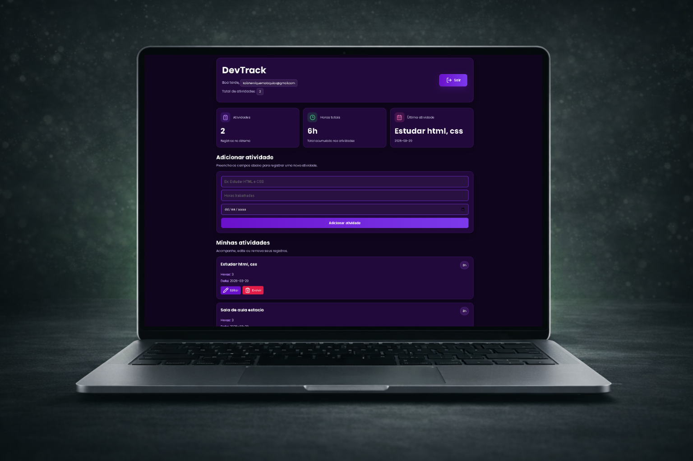
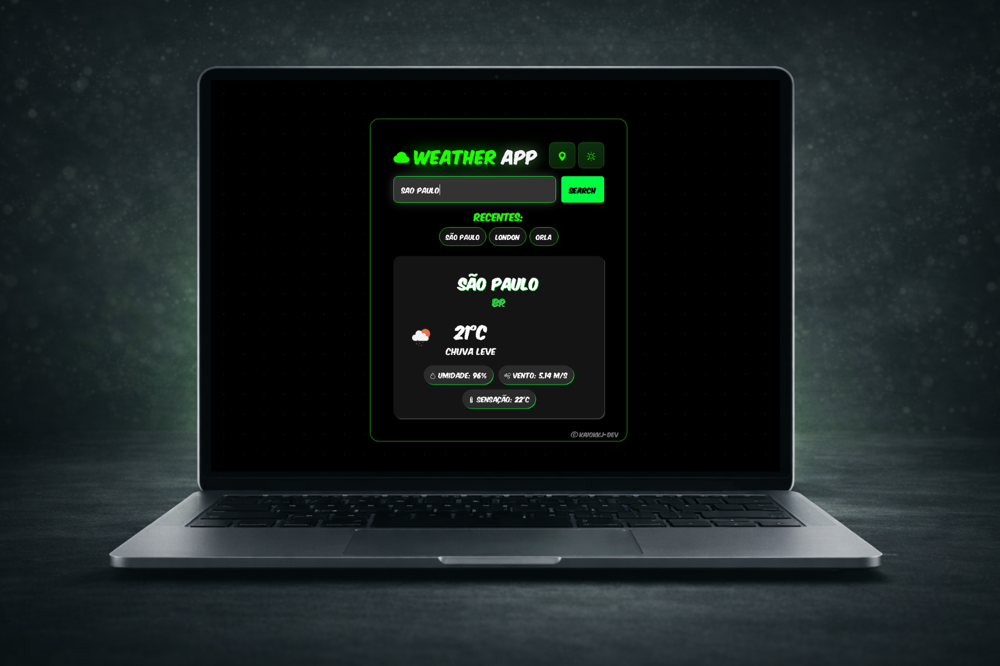
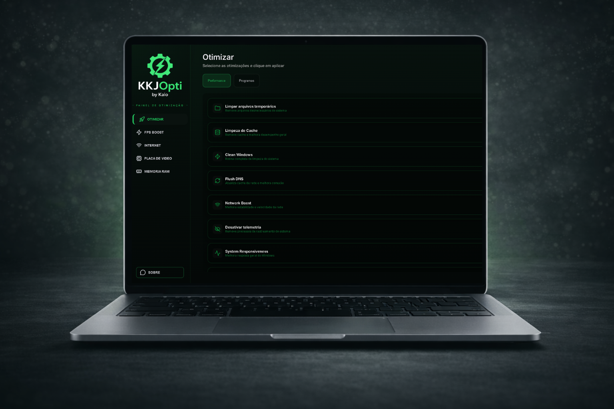

VelhaGol
VelhaGol é um jogo da velha com tema futebol, desenvolvido em HTML, CSS e JavaScript, que traz uma proposta criativa ao incluir desempate por pênaltis, placar persistente e interface responsiva.
Olá, eu sou
Frontend Engineer
Desenvolvo aplicações web modernas, rápidas e responsivas, unindo performance, experiência do usuário e código limpo para criar produtos digitais eficientes.

Sou Desenvolvedor Front-End focado em transformar ideias em experiências digitais modernas e intuitivas. Tenho construído projetos utilizando HTML, CSS e JavaScript, aplicando conceitos de responsividade, organização de código e boas práticas de interface. Busco evoluir constantemente minhas habilidades técnicas enquanto desenvolvo soluções funcionais, acessíveis e bem estruturadas, sempre com atenção à experiência do usuário e à performance.
VelhaGol é um jogo da velha com tema futebol, desenvolvido em HTML, CSS e JavaScript, que traz uma proposta criativa ao incluir desempate por pênaltis, placar persistente e interface responsiva.

Aplicação de gerenciamento de tarefas desenvolvida para praticar Node.js, Express, EJS, CSS e JavaScript, com foco em lógica, manipulação de dados, autenticação de usuários e organização de interface.

O Weather App é uma aplicação de clima desenvolvida utilizando HTML, CSS e JavaScript, que consome dados em tempo real através da API da OpenWeather. O projeto foi criado com o objetivo de praticar integração com APIs externas, manipulação de dados e construção de interfaces modernas e responsivas.

KKJOpti é um aplicativo de otimização para Windows desenvolvido com Electron que melhora o desempenho do sistema com um clique, aplicando ajustes de CPU, memória, rede e FPS.
Estou aberto a novas oportunidades, projetos freelance e colaborações. Se você busca alguém comprometido com performance, organização e experiência do usuário, vamos conversar.